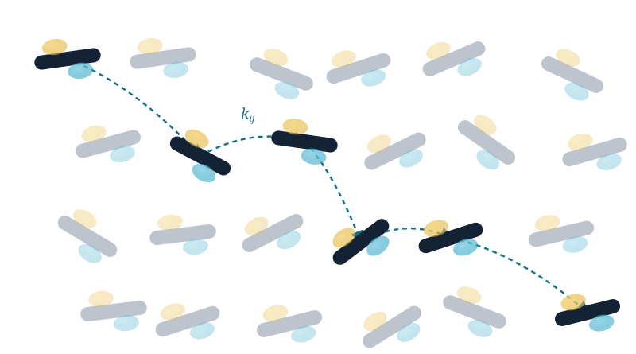

Current work, CaSToRC (2025 to present)
Charge transport in organic semiconductors
Conducting polymers such as PEDOT:PSS, blended with phosphorescent organometallic emitters like PtOEP, are promising for flexible optoelectronics, but their performance depends on how charges move through a disordered morphology.
With Prof. Vangelis Harmandaris I connect atomistic morphologies from molecular dynamics to charge mobilities, through electronic coupling calculations and kinetic Monte Carlo.
- Marcus-theory hopping rates from DFT electronic couplings
- Random-walk and kinetic Monte Carlo mobility
- An automated Python pipeline with YAML configuration and a desktop GUI
- Atomistic morphologies from GROMACS molecular dynamics